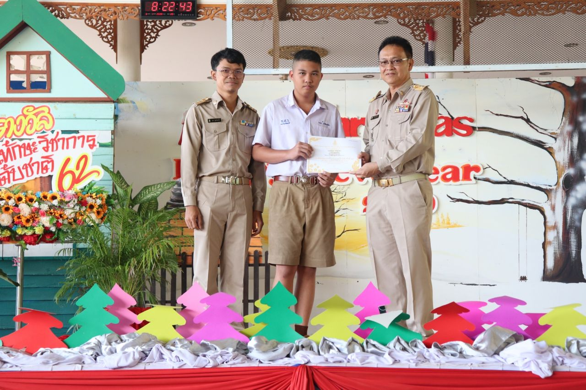
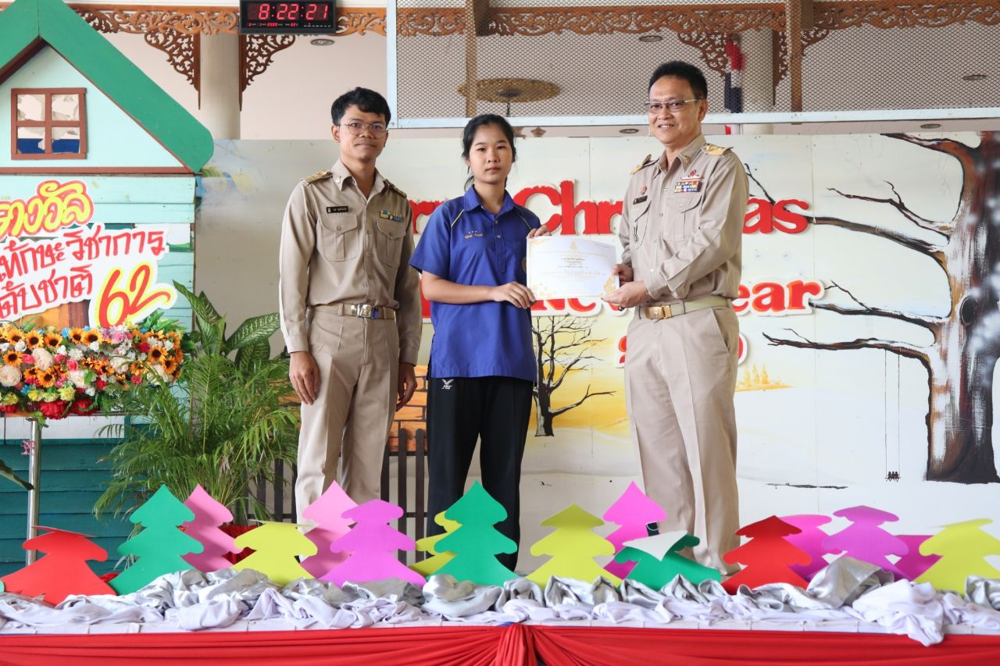

ผลงาน
ปีการศึกษา 2/2562
นำนักเรียนเข้าร่วมแข่งขันงานศิลปหัตถกรรมนักเรียน ระดับสหวิทยาเขตระยอง 2 ครั้งที่ 69 ประจำปีการศึกษา 2562 ในรายการเดี่ยวขลุ่ยเพียงออและเดี่ยวซอด้วง ระดับมัธยมศึกษาตอนต้น ณ โรงเรียนแกลง"วิทยสถาวร"
เด็กชายรณกร ทวีวัฒนปรีชา ชั้น ม.2/10 แข่งขันเดี่ยวขลุ่ยเพียงออ เพลงการเวก สามชั้น

นางสาวจุฑาทิพย์ สุทธิสถิตย์ ชั้น ม.3/8 แข่งขันเดี่ยวซอด้วง เพลงลมพัดชายเขา สามชั้น

นักเรียนเข้าร่วมแข่งขันวิชาการ งานศิลปหัตถกรรมนักเรียน ระดับชาติ ( ภูมิภาค : ภาคกลางและภาคตะวันออก ) ครั้งที่ 69 ประจำปีการศึกษา 2562


